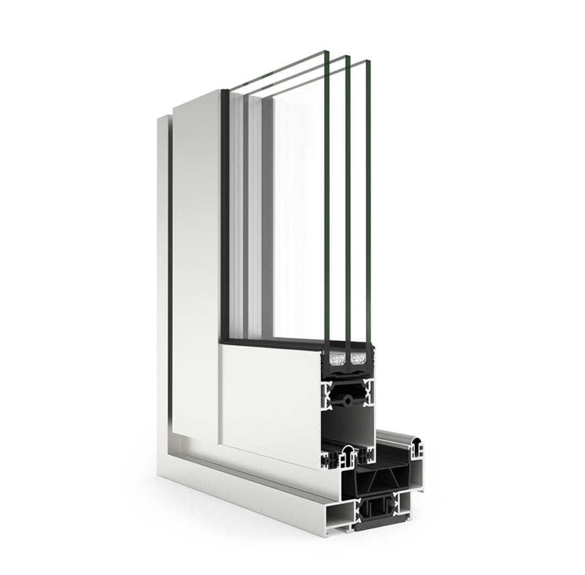
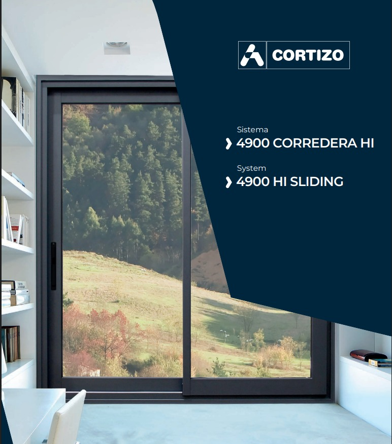
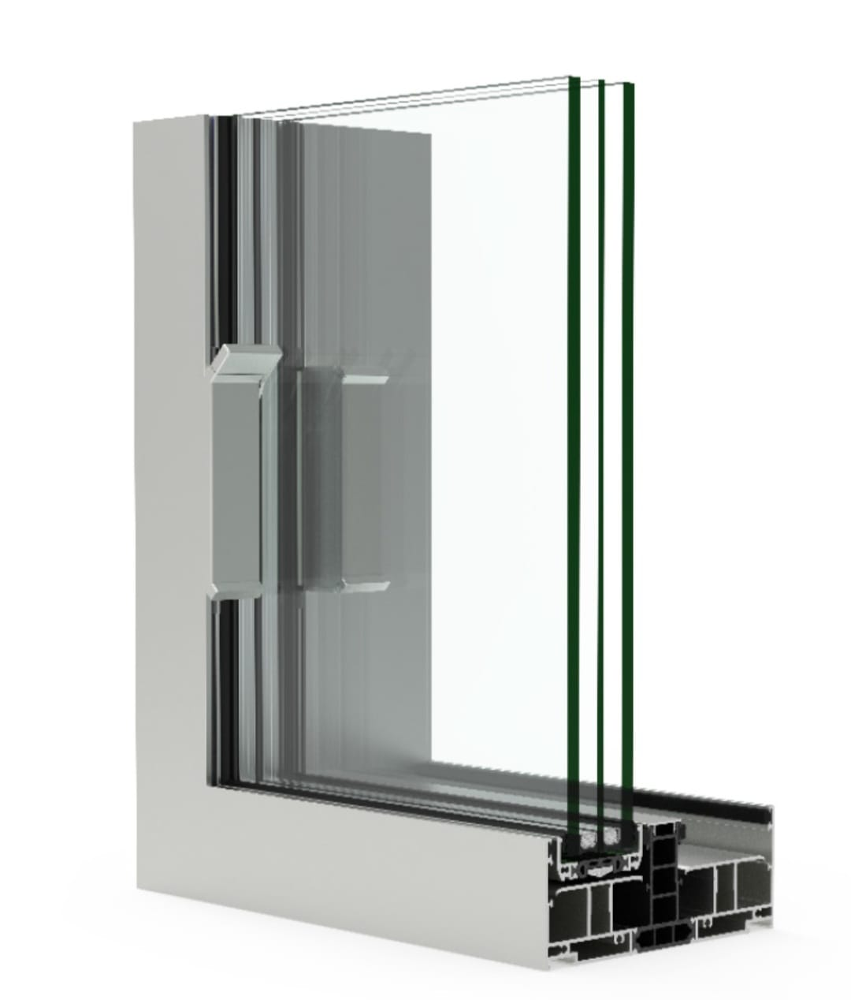
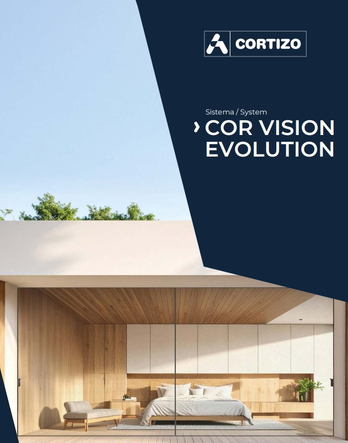
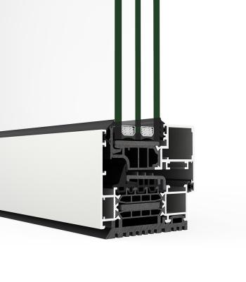
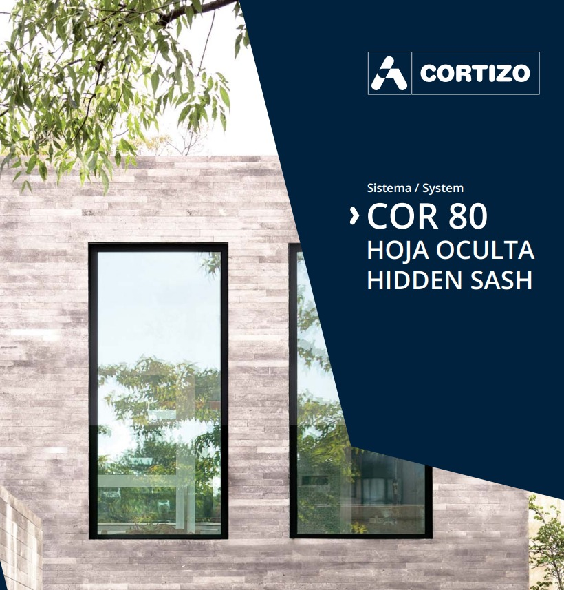
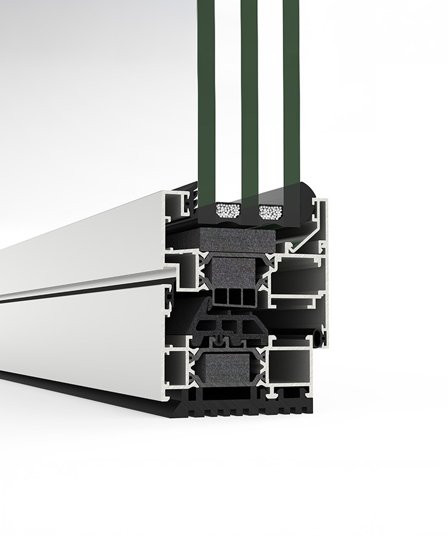
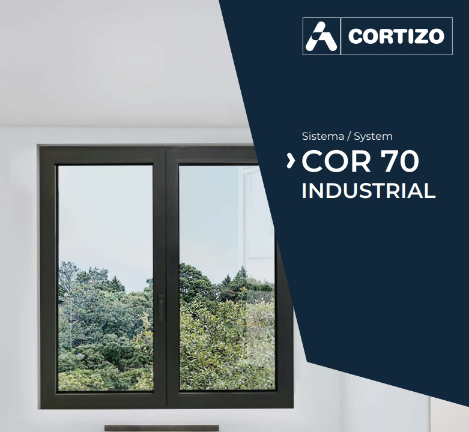

Scopri la nostra gamma di serramenti


Finestra scorrevole standard con le prestazioni di una battente. Offre elevate prestazioni termiche ed acustiche agevolata da una capacità di vetrazione fino a 36 mm ed un taglio termico di 34 mm. Presenta un nodo centrale di 35 mm e linee rette, permettendo l’incrocio delle ante grazie alla maniglia integrata con chiusura multipunto.


La nuova versione dello scorrevole Cor Vision accentua il suo minimalismo grazie ad un sistema di chiusura che permette di nascondere perimetralmente le ante, aprendo la strada a viste infinite che vengono interrotte solo da un nodo centrale di 25 mm.


Elegante disegno con linee rette ed anta nascosta che massimizza la superficie vetrata e l’ingresso della luce. Il tutto accompagnato da un elevato rendimento termico e acustico ottenuto grazie ad un taglio termico di 45 mm ed una scanalatura fino a 51 mm che permette l’installazione di vetri tripli.


Questo sistema a battente di 70 mm di profondità offre un gran rendimento termico e acustico combinato ad un montaggio molto semplice, per questo si è convertito in una delle serie più richieste per finestre, porte e portefinestre in alluminio.